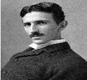

Adventures of Tesla - World Destroyer
 This is a movie about dude called Tesla. He is famous world destoryer since he found out a way to destory another dude with some magic rays.A couple going on vacation but his wife was on a business trip so he went to the destination first and his wife would meet him the next day.When he reached his hotel, he decided to send his wife a quick email.Unfortunately, when typing her address, he mistyped a letter and his note was directed instead to an elderly preacher’s wife whose husband had passed away only the day before.When the grieving widow checked her email, she took one look at the monitor, let out a piercing scream, and fell to the floor in a dead faint.At the sound, her family rushed into the room and saw this note on the screen:
Read Full Article